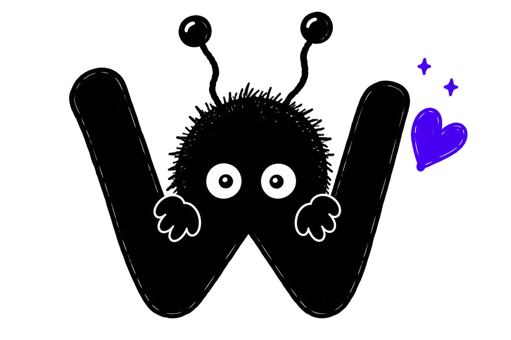

AriadnaOS
Un sistema personal de atención y memoria para ayudarte a no perder el hilo.
WEIRD WORKS
Hacemos software pequeño para problemas demasiado específicos como para que a otros les merezca la pena resolverlos.
Ver proyectos ↓
Este es Woki. Él supervisa.
01 — PROYECTOS
Un sistema personal de atención y memoria para ayudarte a no perder el hilo.
Una editora que recuerda tu obra. Detecta incoherencias, contradicciones y cabos sueltos sin escribir por ti.
Habrá más cosas raras. No tenemos ninguna prisa.
✦02 — FILOSOFÍA
Weird Works nace de una idea sencilla. Hay problemas pequeños, personales o demasiado específicos que también merecen buenas herramientas.
Nuestra filosofía completa todavía está tomando forma. Y preferimos escribirla bien antes que llenarla de palabras que no significan nada.
03 — WEIRD WORKS
Weird Works es un pequeño laboratorio de software. Construimos herramientas porque tenemos un problema concreto, una idea rara o simplemente curiosidad por ver si algo puede funcionar mejor.
Algunas serán útiles. Algunas serán rarísimas. Idealmente, ambas cosas.